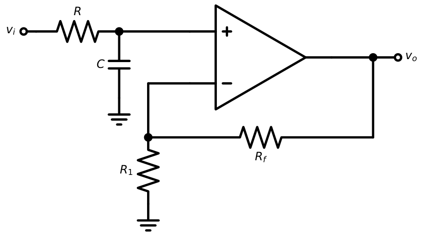
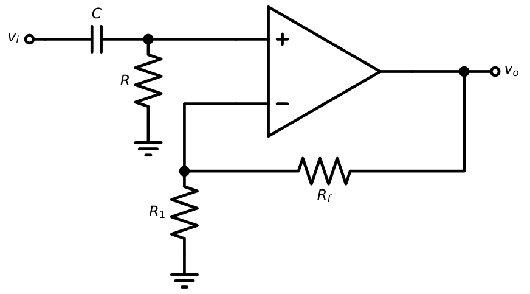
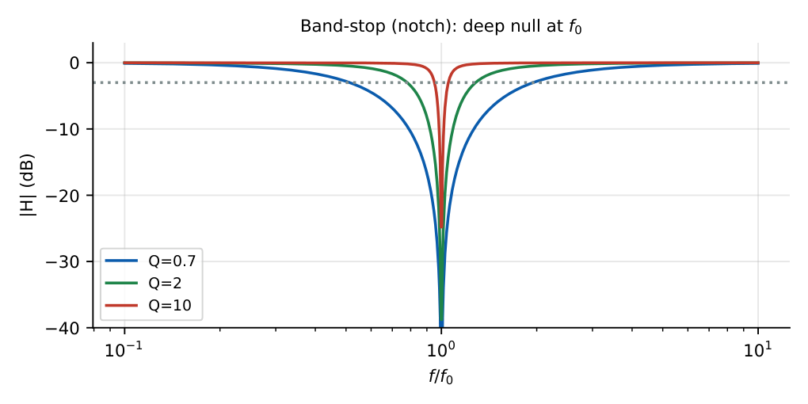
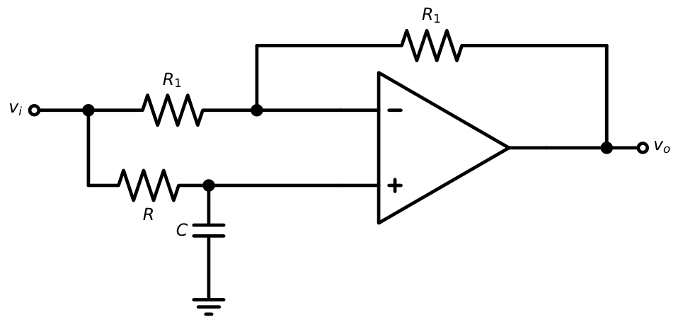
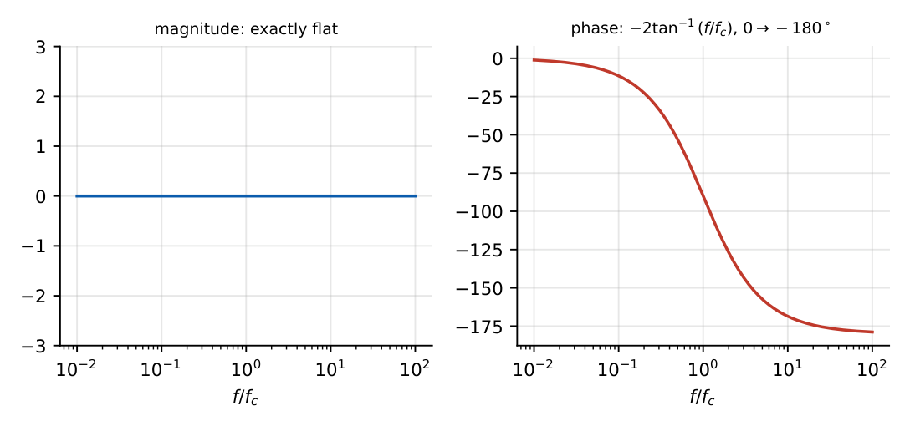
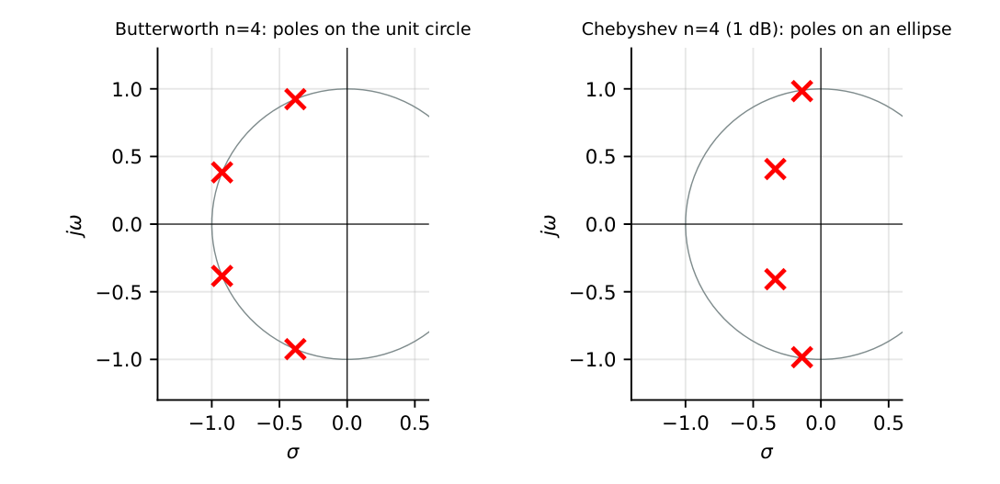
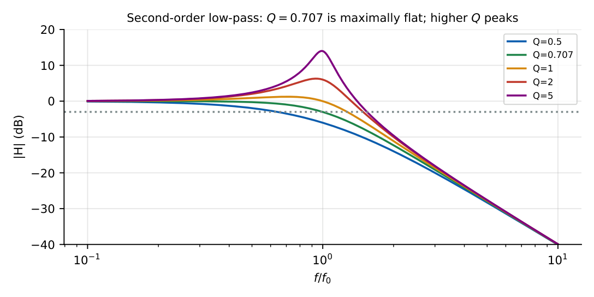
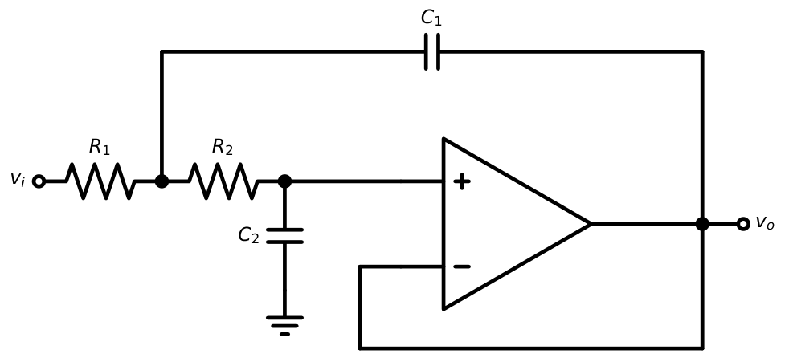
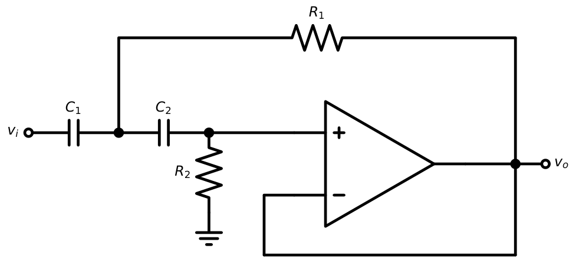
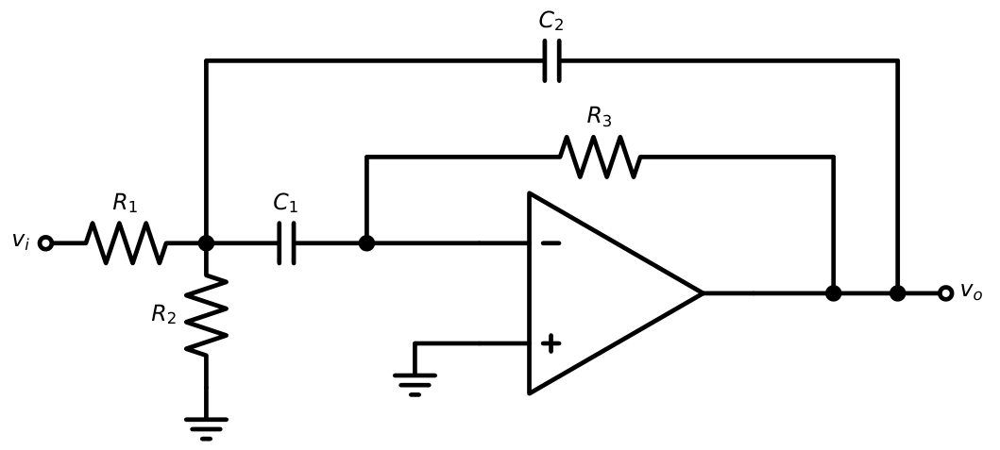

Active Filters
In this chapter
- 21.1 Passive versus active filters
- 21.2 First-order low-pass filter
- 21.3 First-order high-pass filter
- 21.4 Band-pass filter
- 21.5 Band-stop filter
- 21.6 All-pass filter
- 21.7 Butterworth response
- 21.8 Chebyshev response
- 21.9 Filter order
- 21.10 Cutoff frequency
- 21.11 Q-factor
- 21.12 Sallen–Key filters
- 21.13 Multiple-feedback filters
- 21.14 GATE filter problems
21.1 Passive versus active filters
Passive \(RC\) filters have no gain, load-dependent response, and cannot produce complex poles (high \(Q\)) without inductors. Active filters use op-amps to give gain, buffering (low output resistance), complex poles without inductors, and easy cascading. Limits: op-amp GBW (up to \(\approx\) 100 kHz–1 MHz effectively), supply requirement, noise.
21.2 First-order low-pass filter

\(H(s)=\left(1+\dfrac{R_f}{R_1}\right)\dfrac{1}{1+sRC}\), \(f_c=\dfrac1{2\pi RC}\), \(A_0=1+R_f/R_1\), roll-off \(-20\) dB/dec.
\(R=10\) k, \(C=0.01\ \mu\)F: \(f_c=1.59\) kHz. With \(R_1=10\) k, \(R_f=20\) k: \(A_0=3\) (\(9.5\) dB). At \(f=10f_c\) the gain is \(3/\sqrt{101}=0.30\) (\(-10.5\) dB).
21.3 First-order high-pass filter

\(H(s)=\left(1+\dfrac{R_f}{R_1}\right)\dfrac{sRC}{1+sRC}\), \(f_c=\dfrac1{2\pi RC}\), roll-off \(+20\) dB/dec below \(f_c\).
21.4 Band-pass filter
Two types:
- Wide-band (\(Q<10\)): a high-pass (\(f_L\)) cascaded with a low-pass (\(f_H\)), \(f_L<f_H\). Centre frequency \(f_0=\sqrt{f_Lf_H}\), bandwidth \(B=f_H-f_L\), \(Q=f_0/B\).
- Narrow-band (\(Q>10\)): multiple-feedback circuit (Section 21.13).

HP at \(200\) Hz cascaded with LP at \(2\) kHz: \(f_0=\sqrt{200\times2000}=632\) Hz, \(B=1800\) Hz, \(Q=0.35\) (wide-band).
21.5 Band-stop filter
A notch filter rejects a narrow band: \(H=\dfrac{1-(f/f_0)^2}{1-(f/f_0)^2+jf/(Qf_0)}\); obtained by summing a low-pass and a high-pass (\(f_L>f_H\)) or with a twin-T network. Used to remove \(50\) Hz mains hum.

21.6 All-pass filter
Passes all frequencies with unity gain but shifts phase (a delay equaliser).

\(H(s)=\dfrac{1-sRC}{1+sRC}\), \(|H|=1\), \(\phi=-2\tan^{-1}(\omega RC)\)

21.7 Butterworth response
Maximally flat magnitude in the passband:
\(|H(f)|^2=\dfrac{A_0^2}{1+(f/f_c)^{2n}}\); roll-off \(-20n\) dB/dec; \(-3\) dB at \(f_c\) for every \(n\).
Poles lie equally spaced on a circle of radius \(\omega_c\) in the left half plane.

Second-order Butterworth has \(Q=0.707\); fourth-order: cascaded sections with \(Q=0.541\) and \(1.307\).
21.8 Chebyshev response
Equiripple passband, steeper transition than Butterworth of the same order, but ripple and non-linear phase: \[|H|^2=\frac{A_0^2}{1+\varepsilon^2C_n^2(f/f_c)},\qquad\varepsilon=\sqrt{10^{R_{dB}/10}-1}.\] Poles lie on an ellipse. A Chebyshev filter of order \(n\) has \(n\) passband maxima/minima; ripple \(=1\) dB \(\Rightarrow\varepsilon=0.509\).

21.9 Filter order
Butterworth order for pass-band edge \(f_p\) (attenuation \(A_p\) dB) and stop-band edge \(f_s\) (attenuation \(A_s\) dB):
\(n\ge\dfrac{\log\left[(10^{A_s/10}-1)/(10^{A_p/10}-1)\right]}{2\log(f_s/f_p)}\)
\(A_p=3\) dB at \(f_p=1\) kHz, \(A_s=40\) dB at \(f_s=4\) kHz: \(n\ge\dfrac{\log(9999)}{2\log4}=\dfrac{4}{1.204}=3.32\Rightarrow n=4\). A Chebyshev filter with \(1\) dB ripple would need only about \(n=3\).
21.10 Cutoff frequency
For a first-order RC section \(f_c=1/(2\pi RC)\); for equal-component Sallen–Key \(f_c=1/(2\pi RC)\). For a cascade of \(n\) identical first-order sections, \(f_{-3dB}=f_c\sqrt{2^{1/n}-1}\) (shrinks: two identical sections give \(0.644f_c\)).
21.11 Q-factor
For a second-order low-pass \(H=\dfrac{1}{1-(f/f_0)^2+j\,f/(Qf_0)}\):

For a band-pass, \(Q=f_0/B\). The pole-pair angle: \(\cos\theta=1/(2Q)\).
21.12 Sallen–Key filters


Low-pass: \(\omega_0=\dfrac1{\sqrt{R_1R_2C_1C_2}}\), \(\;Q=\dfrac{\sqrt{R_1R_2C_1C_2}}{C_2(R_1+R_2)}\); equal \(R\): \(Q=\tfrac12\sqrt{C_1/C_2}\)
High-pass: \(\omega_0=\dfrac1{\sqrt{R_1R_2C_1C_2}}\), \(\;Q=\dfrac{\sqrt{R_1R_2C_1C_2}}{R_2(C_1+C_2)}\)
With a non-inverting gain \(K\) (equal \(R\), equal \(C\)): \(Q=\dfrac{1}{3-K}\); Butterworth (\(Q=0.707\)) needs \(K=1.586\).
Unity-gain Sallen–Key LP, equal \(R=10\) k, \(C_2=10\) nF, \(C_1=20\) nF: \(Q=\tfrac12\sqrt2=0.707\) (Butterworth). \(\omega_0=1/(10^4\sqrt{2\times10^{-16}})=7071\) rad/s: \(f_0=1.125\) kHz.
21.13 Multiple-feedback filters

With \(C_1=C_2=C\):
\(f_0=\dfrac{1}{2\pi C}\sqrt{\dfrac{R_1+R_2}{R_1R_2R_3}}\), \(Q=\pi f_0R_3C\), \(A_0=-\dfrac{R_3}{2R_1}\) (at \(f_0\))
\(f_0=1\) kHz, \(Q=10\), \(A_0=-2\), \(C=10\) nF. \(R_3=Q/(\pi f_0C)=10/(\pi\times10^3\times10^{-8})=318\) k\(\Omega\). \(R_1=R_3/(2|A_0|)=79.6\) k\(\Omega\). Solve for \(R_2\): \(\dfrac1{R_2}=(2\pi f_0C)^2R_3-\dfrac1{R_1}\Rightarrow R_2\approx0.80\) k\(\Omega\).
21.14 GATE filter problems
Q1. A first-order active low-pass filter with \(R=10\) k\(\Omega\) and \(C=15.9\) nF has \(f_c=\) Hz.
Q2. The asymptotic roll-off of a third-order Butterworth filter is (A) \(-20\) (B) \(-40\) (C) \(-60\) (D) \(-80\) dB/decade.
Q3. A band-pass filter has \(f_L=1\) kHz and \(f_H=4\) kHz. Its centre frequency and \(Q\) are kHz and .
Q4. An equal-component Sallen–Key low-pass has gain \(K=1.586\). \(Q=\) .
Q5. The phase of a first-order all-pass \(H=(1-j\omega RC)/(1+j\omega RC)\) at \(\omega=1/RC\) is degrees.
Q6. Which filter type has ripple in the passband? (A) Butterworth (B) Chebyshev type I (C) Bessel (D) first-order RC.
Answers: Q1: \(1/(2\pi\times10^4\times15.9\times10^{-9})=1000\) Hz. Q2: (C). Q3: \(f_0=\sqrt{1\times4}=2\) kHz, \(B=3\) kHz, \(Q=0.667\). Q4: \(1/(3-1.586)=0.707\). Q5: \(-90^\circ\). Q6: (B).
- Design a first-order HP with \(f_c=500\) Hz, \(C=0.1\ \mu\)F. [\(R=3.18\) k\(\Omega\)]
- A notch at \(50\) Hz: which quantity sets \(B=f_0/Q\)? Compute \(B\) for \(Q=10\). [5 Hz]
- What order Butterworth is required for \(A_p=3\) dB at \(2\) kHz, \(A_s=30\) dB at \(6\) kHz? [\(n=3.14\to4\)]
- Explain why Chebyshev filters give steeper roll-off. [Ripple budget lets poles move closer to the \(j\omega\) axis]